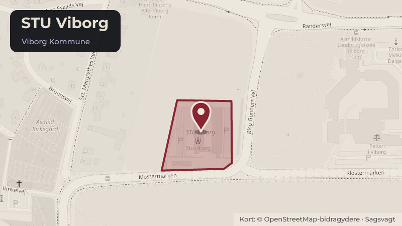

Besluttet 26. august, Økonomi- og Erhvervsudvalget, Viborg
Revideret styrelsesvedtægt for STU Viborg
Bestyrelsen for STU Viborg ønsker, at styrelsesvedtægt for STU Viborg ændres, så den i højere grad modsvarer de aktuelle forhold på STU Viborg og sikrer en tydelig ramme for bestyrelsesarbejdet.
Steder i sagen: STU Viborg

Kort fortalt
- Forslaget
- Revideret styrelsesvedtægt for STU Viborg godkendes.
- Hvem
- Økonomi- og Erhvervsudvalget, Viborg Kommune
- Hvornår
- Onsdag 26. august 2026
- Status
- Besluttet. I UDDANNELSES- OG BESKÆFTIGELSESUDVALGET (2026-2029) Uddannelses- og Beskæftigelsesudvalget indstiller til byrådet, 1. at revideret styrelsesvedtægt for STU Viborg godkendes.
Læs hele sagen Kommunens egen tekst
Indstilling
Direktøren for Beskæftigelse, Økonomi & Personale foreslår, at Uddannelses- og
Beskæftigelsesudvalget indstiller til byrådet,
1. at revideret styrelsesvedtægt for STU Viborg godkendes.
Sagsfremstilling
Historik
Den gældende styrelsesvedtægt for STU Viborg blev godkendt i byrådet den 30. oktober 2019
(link til sag nr. 3 i Viborg Byråd den 30. oktober 2019 ).
Inddragelse og høring
Intet.
Beskrivelse
STU Viborg er Viborg Kommunes eget tilbud om Særlig Tilrettelagt Ungdomsuddannelse
(STU) til unge med særlige behov. Tilbuddet blev etableret i 2010 og har sin egen bestyrelse,
hvis funktionsperiode følger byrådsperioden.
Som en del af opstarten af en ny bestyrelsesperiode (2026-2029) har bestyrelsen drøftet den
gældende styrelsesvedtægt for STU Viborg. Bestyrelsen vurderer, at styrelsesvedtægten bør
ændres, så den modsvarer de aktuelle forhold på STU Viborg og samtidig sikrer en tydelig
ramme for bestyrelsens arbejde.
Udkast til revideret styrelsesvedtægt for STU Viborg indeholder blandt andet forslag til
ændringer på følgende områder:
Rollefordelingen mellem bestyrelse og forvaltning ved personsager, budgetlægning og
ansættelser/afskedigelser justeres.
Bestyrelsesmedlemmers forpligtigelser i forhold til tavshedspligt og inhabilitet er tilføjet.
Borgere på STU Viborg blev tidligere benævnt studerende, men benævnes nu elever,
hvilket er konsekvensrettet.
Pædagogisk Råd eksisterer ikke længere, da personalesammensætningen er anderledes
end tidligere. Dette er konsekvensrettet.
Udkast til revideret styrelsesvedtægt for STU Viborg fremgår i bilag 1 med markerede
ændringer, mens udkast med indarbejdede ændringer fremgår af bilag 2.
Alternativer
Intet.
Tidsperspektiv
Såfremt byrådet godkender forslag til revideret styrelsesvedtægt for STU Viborg, vil
vedtægterne være gældende fra den dato, hvor de er underskrevet af henholdsvis borgmester
og bestyrelsesformand for STU Viborg.
Økonomiske forhold og konsekvenser
Intet.
Juridiske og planmæssige forhold
Intet.
Beslutning
I UDDANNELSES- OG BESKÆFTIGELSESUDVALGET (2026-2029)
Uddannelses- og Beskæftigelsesudvalget indstiller til byrådet,
1. at revideret styrelsesvedtægt for STU Viborg godkendes.
Kilde: Viborg Kommune, Økonomi- og Erhvervsudvalget, referat fra mødet onsdag 26. august 2026, punkt 9. Læs den originale sag hos kommunen.